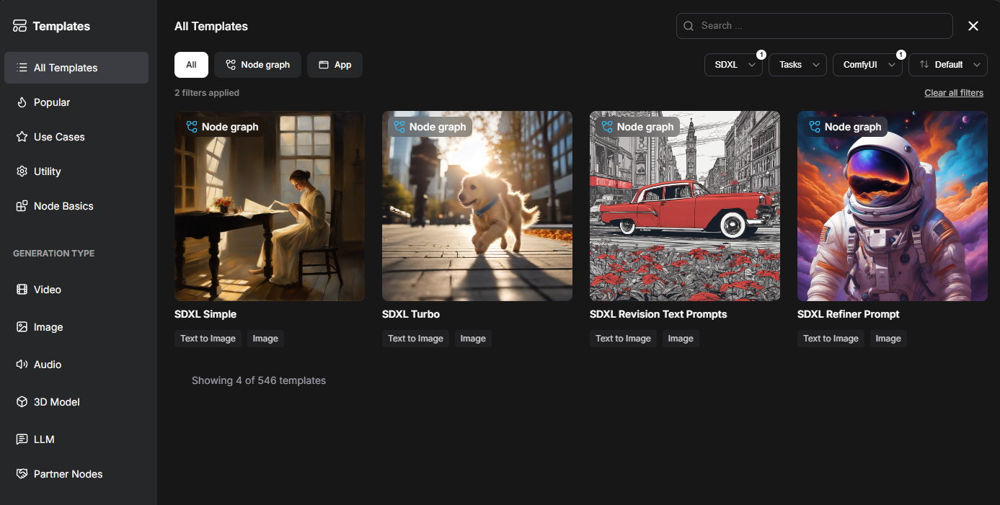
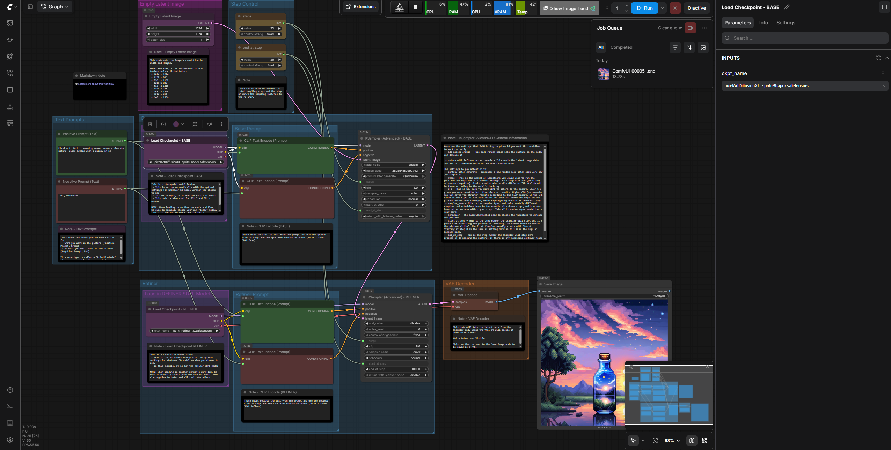
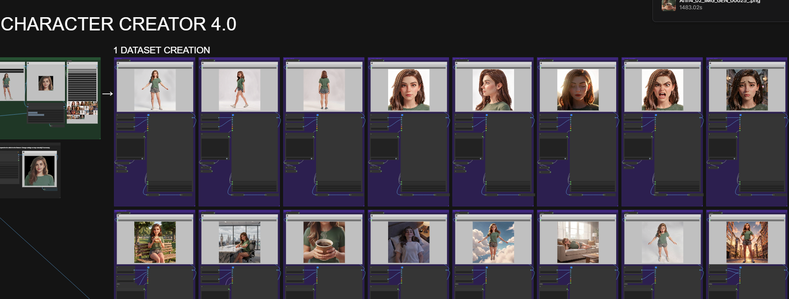
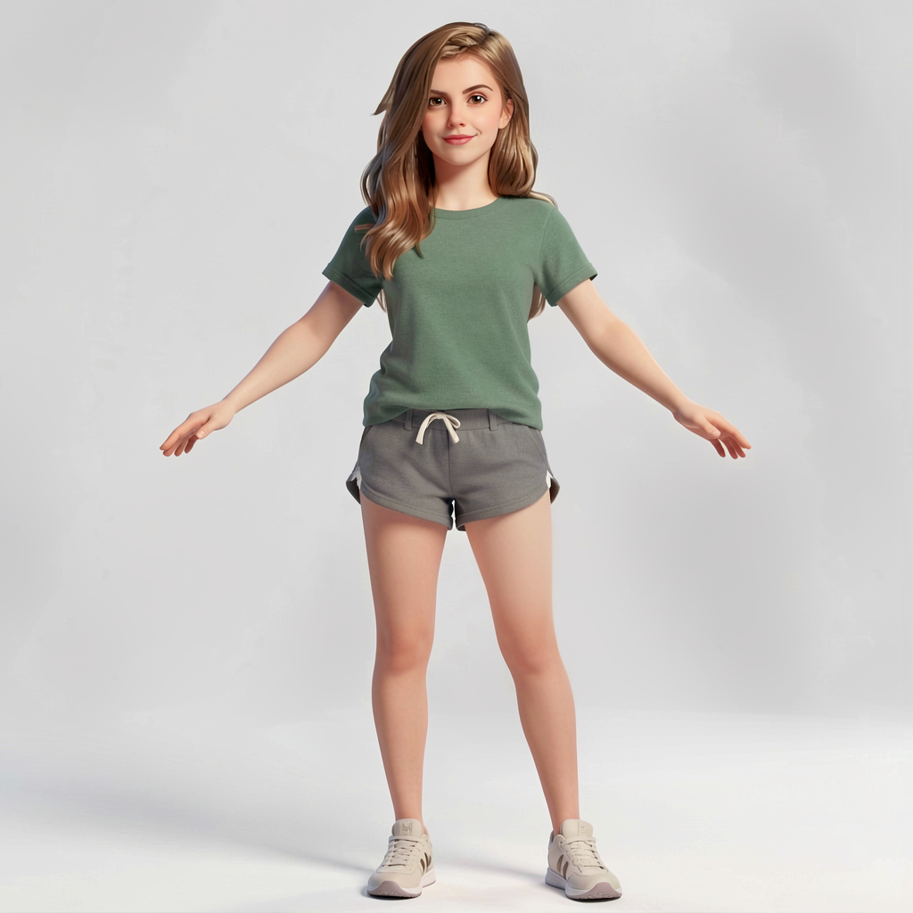
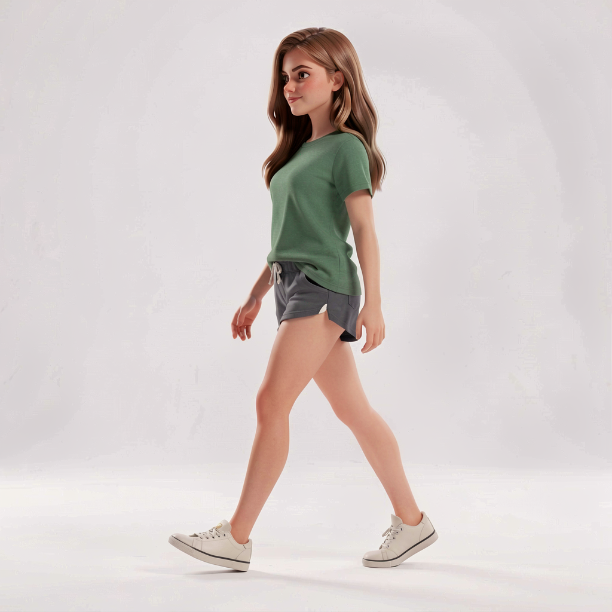

My ComfyUI Experiments
Exploring Local AI Workflows for Images, Audio, and Video
ComfyUI has become one of the most useful tools in my local AI experiments. Rather than being a single AI model, ComfyUI is a visual environment for connecting models and processing steps together into custom workflows.
I've used it to experiment with image generation, audio generation, voice cloning, video generation, and character consistency. I've also downloaded and modified workflows created by other people to accomplish things that would be difficult to build from scratch.
Why I Like ComfyUI
ComfyUI is amazing in many ways. One of the biggest advantages of ComfyUI is that I can run the models locally on my own hardware. There are no daily generation limits imposed by a web service, and the content I'm creating doesn't need to leave my computer.
This comes with a tradeoff: local generation can be considerably slower. A cloud service may generate an image or video much faster because it is running on expensive server hardware. My computer has a capable RTX 4070 Ti with 12GB of VRAM, but generating complex video locally can still take 10 minute for a 10 second clip.
I get unlimited experimentation, no watermarks, local processing, and control over the models and workflows I use.
The comparison is particularly interesting when I use commercial services as part of a local workflow. ElevenLabs, for example, produces excellent voices, but there are usage limits. I can use an ElevenLabs result as a reference or starting point for a local ComfyUI workflow.
This general approach of using a higher-quality model to help produce training or reference material for another model is often described as distillation.
Learning How the Models Work
One unexpected benefit of using ComfyUI has been learning the vocabulary behind generative AI. The workflow-based approach forced me to learn what the different model components actually do and how they fit together.
- Checkpoint
- The primary model containing the weights needed to generate content. Examples include Stable Diffusion 1.5, SDXL, and FLUX.
- VAE — Variational Autoencoder
- Acts as a translator between the model's mathematical representation and an actual image. Some checkpoints include their VAE internally.
- CLIP Text Encoder
- Converts written prompts into a representation the image model can understand.
- LoRA — Low-Rank Adaptation
- A smaller modifier that can be applied to a base model to influence things such as artistic style, characters, clothing, or poses without replacing the entire model.
- ControlNet
- Allows reference information, such as a character pose, to guide the generation process.
- FaceID LoRA
- A technique for preserving facial characteristics so that the same character can be generated in different scenes, outfits, and poses.
- Upscaler
- Increases image resolution while attempting to recreate details, improve textures, sharpen images, and reduce artifacts.
Understanding Model File Formats
Working with local models also introduced me to the different file formats used to distribute AI models.
.safetensors
.safetensors is a format commonly used for storing AI model
weights. Unlike formats that can contain executable code, safetensors
is designed to contain tensor data rather than arbitrary executable
objects, making it a safer way to distribute model files.
.gguf
.gguf is a model format designed particularly for efficient
inference, including quantized models that can run on hardware with
limited VRAM. This makes it possible to experiment with models that
would otherwise be too large for consumer hardware. Low VRAM in 2026 is considered 8GB.
Experiment: Generating Pixel Art
I recently needed pixel art for another project. Rather than generating every asset manually, I searched for an SDXL checkpoint specifically designed for pixel art.
I found the Pixel Art Diffusion XL model and downloaded
the .safetensors checkpoint into the \Comfy-Desktop\ComfyUI-Shared\models\checkpoints directory. I then filtered the ComfyUI
templates for workflows using SDXL and started with the simple SDXL
workflow.


The model recommended beginning the prompt with "Pixel Art" and keeping the prompt relatively simple. For example:
Pixel Art. 16 bit. Pixel art of [wooden chest]. Game Asset. transparent background.
Consistent Characters
One of the most exciting ComfyUI experiments I've done involves generating consistent characters.
Several years ago, when I was creating a 2D point-and-click adventure game, one of my biggest frustrations was getting AI image generators to maintain the same character between different poses, outfits, and scenes.
I recently found Consistent Character Creator a ComfyUI workflow specifically designed to solve this problem. The website gives instructions on how to add the workflow and which ai models to download. I was impressed this actually worked because it seems ComfyUI is being updated daily and the updates frequently break custom workflows. I used a character image from my old game as the reference image and ran it through the workflow.




The results were remarkable. The workflow was able to preserve the identity of the character across different generated images far better than the tools I had available when I originally created the game.
Consistent characters were one of the most time-consuming problems in my original game project. A workflow like this would have saved me countless hours of manual image editing and regeneration.
From Images to Video
Once I discovered how useful reference images could be for maintaining characters, the next obvious step was using those images as references for video generation.
When Minimax H3 was released, I read about it through my AI newsletter reading and searched for a ComfyUI workflow that supported it. I settled on a Minimax H3 Reference to Video workflow.
I used previously generated images of a red dragon and a goblin as reference images and asked an LLM to help me create a prompt describing goblins fighting a red dragon.
The results were impressive, but video generation is considerably more computationally demanding than generating a still image or an audio clip. Even with my RTX 4070 Ti, a ten-second clip took approximately ten minutes to generate. I went through a few iterations and prompt modifications before reaching one I liked, so it is time consuming.
I went through several iterations and modified the prompt before reaching a result I liked.
Voice Cloning with ComfyUI
I have also used ComfyUI for voice cloning. Clean reference audio is surprisingly important. Ideally, the source contains one isolated speaker without background music, sound effects, or other voices.
For experiments, I searched for short audio samples online and used Audacity to combine several clean clips into a longer reference sample. Another common approach is extracting the audio track from a video.
I learned quickly that holding a phone up to a television is not a great way to collect source audio. The resulting recording contains room acoustics and other noise that can make voice cloning considerably more difficult.
I modified an existing ComfyUI Chatterbox TTS workflow to experiment with voice cloning. One of the more entertaining uses was bringing the voices of old Western movie stars back to life for a personal anniversary greeting for my parents.
What ComfyUI Has Taught Me
ComfyUI has become more than just another AI image generator for me. It has given me a much better understanding of how generative AI systems are assembled.
Instead of simply entering a prompt into a website and receiving a result, I can see the individual stages of a workflow and understand how different models and modifiers interact.
Rather than treating AI as a black box, I can experiment with the individual components and build workflows that combine them in ways that aren't necessarily available through commercial interfaces.
Local AI vs. Cloud Services
I've experimented with several commercial AI services, and they often provide excellent results with very little effort. ChatGPT can produce excellent images. Sora can generate video quickly. ElevenLabs produces remarkably convincing voices.
But each service comes with its own limitations, whether those are usage limits, content restrictions, watermarks, subscription costs, or the requirement to send my content to someone else's servers.
ComfyUI takes the opposite approach. I supply the hardware, models, and patience. In return, I have no artificial daily generation limit, no watermarks added by a service, and my creative work stays on my own computer.
The downside is that local AI requires more technical knowledge. Finding models, installing dependencies, managing VRAM, troubleshooting workflows, and keeping everything compatible can sometimes be a project in itself.
For me, that is part of the appeal.
Reflection
ComfyUI has probably taught me more about the practical side of generative AI than any single other tool I've used. It has taken me from simply generating images to understanding how models are connected, modified, compressed, and used as components in larger workflows.
It has also shown me how quickly the open-source AI ecosystem is moving. New models and workflows appear constantly, and techniques that were difficult or unreliable only a short time ago can suddenly become practical on consumer hardware.
The biggest attraction for me is the freedom to experiment. I can download a model, find a workflow, modify it, combine it with something else, and see what happens. Sometimes it takes considerably longer than using a commercial service, but I have the freedom to keep experimenting without worrying about hitting a daily usage limit.